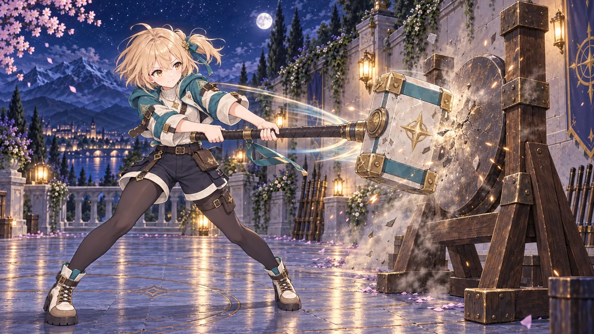
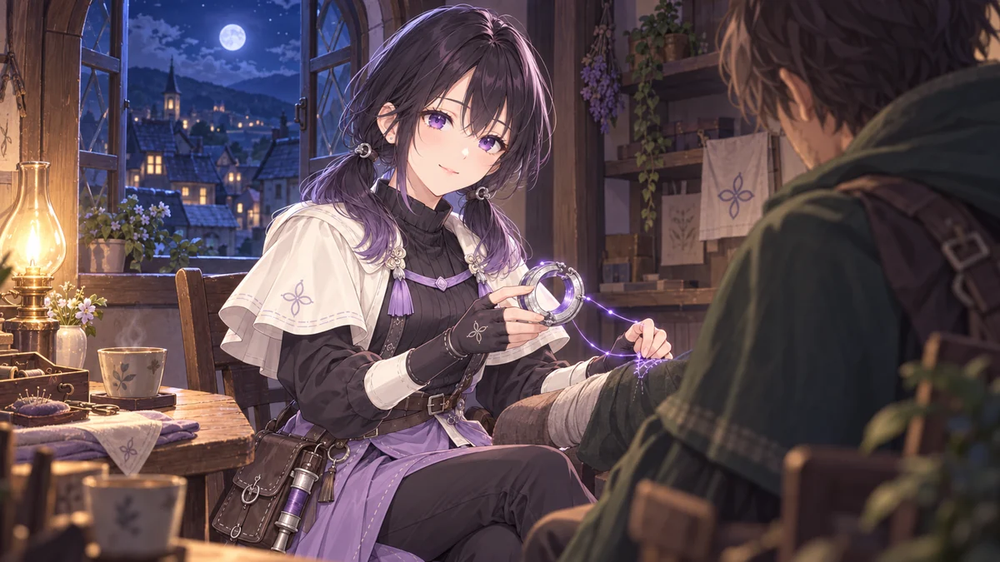
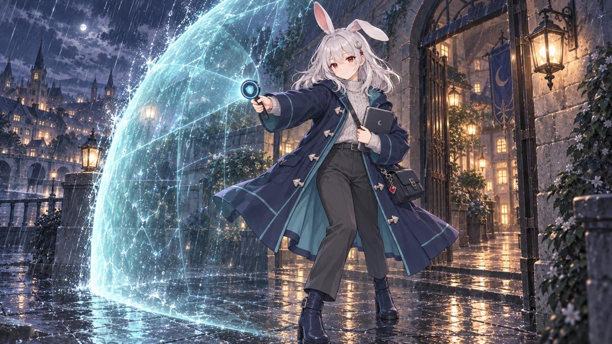
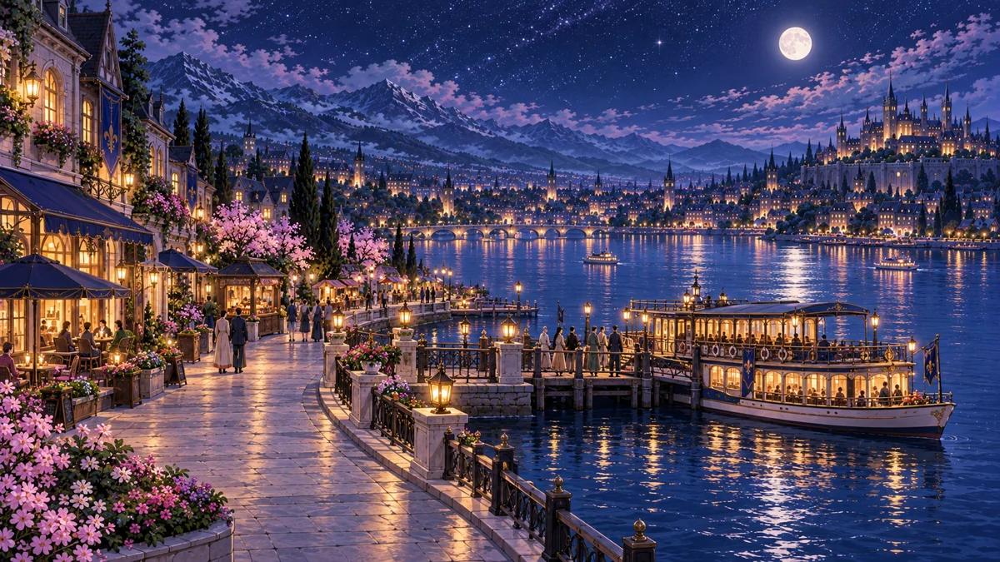

01 / ASSEMBLE
Find your kind of team.
Bring up to four Stellans into your formation. Combine their strengths, shape their builds, and find a rhythm that feels like yours.
A new adventure, in the making
A world to discover. A team to believe in.
Lead your Stellan companions in a character-focused RPG about connection, courage, and the lives worth protecting.
Coming to macOS & Windows · Free to play
Character-driven stories
Thoughtful team building
Progress earned through play
A LITTLE STRATEGY. A LOT OF HEART.
Take command with Astral Concord. Find the right companions, discover what makes them tick, and face the next challenge together.
Bring up to four Stellans into your formation. Combine their strengths, shape their builds, and find a rhythm that feels like yours.

Your companions bring the action in automatic battles. You bring the strategy: team composition, equipment, and the next move forward.

Meet the people behind the abilities. Follow their stories, share quieter moments, and discover what they're fighting to protect.
POWERED BY STAR CORES. DEFINED BY WHO THEY ARE.
They're called Stellans: human-like companions with their own personalities, hopes, and lives beyond the mission.
FIRST DEPUTY · STARCASTER
Warm, direct, and always curious. Miko is the first deputy by your side at Lyth—turning uncertain beginnings into a plan you can believe in.
Beyond the mission, she's finding her own place in the city. And sometimes, a small discovery is better with someone to share it with.
FIELD STELLAN
First impressions don't always tell the whole story. Nana might misplace a fastening clip, but put a hammer in her hands and her timing is precise.
Cheerful energy meets a carefully placed blow. Her hammer grows and shrinks as she channels Core Energy into the work in front of her.

STELLAN / 03WARDKEEPER
A steady presence on the night watch. Ren knows her home through its people, its sheltered benches, and the tea stall worth a detour.
She keeps her promises and delivers her dry humor without a change in expression. There are other worlds she'd like to see—once she can stop finding reasons to stay.
THREADKEEPER
Before she picks up her needle, Chika asks what a thing means to its owner. Her worktable always has room for conversation, comfortable silence, and tea.
She brings that same care to recovery work with Concord, helping people hold on to something familiar when life has been interrupted.
WELCOME TO A CONNECTED UNIVERSE
Cosmic energy connects distant planets. As a new Astral Concord commander, your task is to protect those connections—and the ordinary lives that depend on them.

Lantern-lit streets, familiar faces, and a first command. Find your footing in a city where life goes on between the missions.
Beyond the soaring towers and sunlit walkways, abnormal signals call for help. Step into a wider world, one consequential mission at a time.
YOUR PROGRESS BELONGS TO YOU
Stellar Refrain is being made to be free to download and play. Characters, resources, and upgrades are earned through gameplay. No microtransactions. Just a journey worth taking.
YOUR NEXT CHAPTER
Stellar Refrain is in development.
Desktop downloads will arrive here when they're ready.
Apple Silicon · ARM64
Intel & AMD · x64
Free to play. No release date announced yet.
BEFORE YOU SET OFF
It's a character-focused RPG that brings together team building, automatic card battles, and illustrated stories. You play a new Astral Concord commander, working alongside Stellan companions to protect people across connected worlds.
Yes. Stellar Refrain is being developed as a free game, with all gameplay content obtainable through play and no microtransactions. Optional support, if introduced, will grant no gameplay benefits.
The initial desktop releases are planned for Macs with Apple Silicon and Windows PCs with x64 processors. Minimum operating system versions and other system requirements will be confirmed with the downloads.
Not yet. The game is still in development, and public downloads aren't available. The Mac and Windows download buttons will become available here when the binaries are ready. A public release date hasn't been announced.